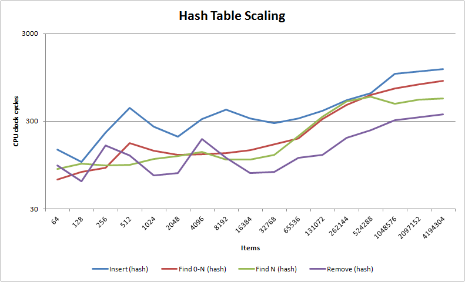
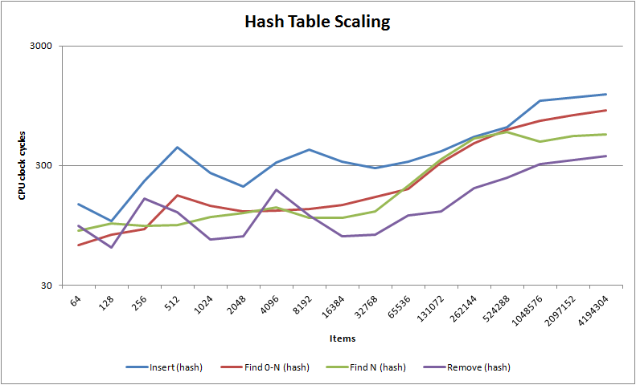
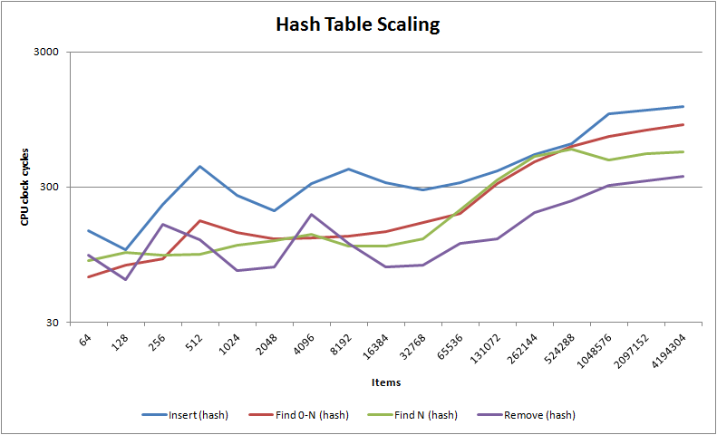

Web site: http://www.nedprod.com/programs/portable/nedtries/
Enclosed is nedtries, an in-place bitwise binary Fredkin trie algorithm which allows for near constant time insertions, deletions, finds, closest fit finds and iteration. On modern hardware it is approximately 50-100% faster than red-black binary trees, it handily beats even the venerable O(1) hash table for less than 3000 objects and it is barely slower than the hash table for 10000 objects. Past 10000 objects you probably ought to use a hash table though, and if you need nearest fit rather than close fit then red-black trees are still optimal.
It is licensed under the Boost Software License which basically means you can do anything you like with it. Commercial support is available from ned Productions Limited.
Its advantages over other algorithms are sizeable:
Its two primary disadvantages are that (i) it can only key upon a size_t (i.e. the size of a void *), so it cannot make use of an arbitrarily large key like a hash table can (though of course one could hash the large key into a size_t sized key) and (ii) it is lousy at guaranteed nearest fit finds. It also runs fastest when the key is as unique from other keys as possible, so if you wish to replace a red-black tree which has a complex left-right comparison function which cannot be converted into a stable size_t value then you will need to stick with red-black trees. In other words, it is ideal when you are keying on pointer sized keys where each item has a definitive non-changing key.
Have a look at the scaling graphs below to decide if your software could benefit. Note for non-random key distributions you may get significantly better or worse performance than shown. If you're interested, read on for how to add them to your software.
In v1.02 a breaking change in what NEDTRIE_NFIND means and does was introduced, and the version was bumped to v1.02 to warn users of the change. The problem in v1.01 and earlier was that I had incorrectly documented what NEDTRIE_NFIND does: I said that it found the nearest item to the search term when this was patently untrue (thanks to smilingthax for reporting this). In fact, NEDTRIE_NFIND used to return a matching item, if there was one, but if there was no matching item, it returned any larger item rather than the next largest item. I do apologise to the users of nedtries for this documentation error, and for the lost productivity it surely must have caused some of you.
The good news is that NEDTRIE_NFIND now guarantees to return the next largest item, and it therefore now matches BSD's red-black Nfind. The bad news is that bitwise tries are really not ideal for guaranteed nearest matching, and performance is terrible as you can see via the purple line in the graphs above. If you can put up with non-guaranteed nearest matching, NEDTRIE_CFIND offers much better performance. NEDTRIE_CFIND takes a rounds parameter which indicates how hard the routine should try to return a close item: rounds=0 means to return the first item encountered which is equal or larger to search key, rounds=1 means try one level down, rounds=2 means try two levels down and so on. rounds=INT_MAX means try hardest, and guarantees that any item with a matching key will be found and that if not matching, any item returned will have a very close key (those not necessarily the closest).
For a summary of the differences between Nfind and Cfind, see this useful table. Note that if you just want any item with a key larger or equal to the search key, NEDTRIE_CFIND(rounds=0|1|2) is extremely swift and has O(1) complexity as shown in the graphs above.
The source makes use of C macros on C and C++ templates on C++ - therefore, unlike typical C-macro-based algorithms it is easy to debug and in fact, the improved metadata specified by the templates lets a modern C++ compiler produce 5-15% faster code through PGO guided selective inlining. The code is 100% standard C and C++, so it should run on any platform or architecture though you may need to implement your own nedtriebitscanr() function if you're not using GCC nor MSVC and want to keep performance high. If you are building debug, NEDTRIEDEBUG is by default turned on: this causes a complete state validation check to be performed after each and every change to the trie which tends to be very good at catching bugs early, but can make debug builds a little slow.
So what is "an in-place bitwise binary Fredkin trie algorithm" then? Well you ought to start by reading and fully digesting the Wikipedia page on Fredkin tries as what comes won't make much sense otherwise. The Wikipedia page describes a non-inplace trie which uses dynamic memory to store each consecutive non-differing section of a string, and indeed this is how tries are normally described in algorithm theory and classes. nedtries obviously enough selects on individual bits rather than substrings, and it uses an inplace instead of dynamically allocated implementation.
Here is how nedtries performs an indexation: firstly, the most significant set bit X is found using nedtriebitscanr() which is no more than one to three CPU cycles on modern processors. This is used to index an array of bins. Each bin X contains a binary tree of items whose keys are (1<<X) <= key < (1<<(X+1)), so what one does is to follow the tree downwards selecting left or right based on whether the next bit downwards is 0 or 1. If an item has children, its key is only guaranteed to be constrained to that of its bin, whereas if an item does not have children then its key is guaranteed to match as closely as possible its position in the tree.
If you insert an item, nedtries indexes as far as it can down the existing tree where the new item ought to be and inserts it there. If you remove an item, if that item has no children it is simply removed. If it has a child then a nobble function is called to select the bias for how to select the childless item to be nobbled and used as the replacement i.e. one either traverses down preferentially 1 or preferentially 0 until you find a childless item, then you delink it from there and link it in to replace the item being removed.
If you think about this hard enough, you realise that you will get a "nearly sorted" binary tree i.e. one whose node keys are very nearly in order. In fact, the more randomised the key, the more in order the tree becomes. The tree is usually sufficiently ordered that one can assume it to be so for most operations, but if you need to guarantee order then you can bubble sort per MSB bin as bubble sort performs very well on nearly sorted data (as does smooth sort if you have a very large set of data) .
The enclosed benchmark.cpp will run a series of scalability tests comparing the bitwise binary trie implementation from nedtries with others outputting its results in CSV format:
You will also find enclosed a set of precomputed Microsoft Excel spreadsheets which were generated on a 2.67Ghz Intel Core 2 Quad Windows 7 x64 machine. They should be representative of performance on modern hardware - though note that the Intel Atom has a 17 cycle nedtriebitscanr() which is the only modern CPU to be so slow. See http://gmplib.org/~tege/x86-timing.pdf for x86 and x64 instruction timings.
Usage via C macros follows the FreeBSD rbtree.h format. See the enclosed nedtries.chm for detailed API documentation. Here is some sample code which can be compiled cleanly using gcc -Wall -pedantic -std=c99 test.c (or as C++ via g++ -Wall -pedantic test.c):
#include <stdio.h>
#include <string.h>
#include "nedtrie.h"
typedef struct foo_s foo_t;
struct foo_s {
NEDTRIE_ENTRY(foo_s) link;
size_t key;
};
typedef struct foo_tree_s foo_tree_t;
NEDTRIE_HEAD(foo_tree_s, foo_s);
static foo_tree_t footree;
size_t fookeyfunct(const foo_t *r)
{
return r->key;
}
NEDTRIE_GENERATE(static, foo_tree_s, foo_s, link, fookeyfunct, NEDTRIE_NOBBLEZEROS(foo_tree_s))
int main(void)
{
foo_t a, b, c, *r;
NEDTRIE_INIT(&footree);
a.key=2;
NEDTRIE_INSERT(foo_tree_s, &footree, &a);
b.key=6;
NEDTRIE_INSERT(foo_tree_s, &footree, &b);
r=NEDTRIE_FIND(foo_tree_s, &footree, &b);
assert(r==&b);
c.key=5;
r=NEDTRIE_NFIND(foo_tree_s, &footree, &c);
assert(r==&b); /* NFIND finds next largest. Invert the key function (i.e. 1-key) to find next smallest. */
NEDTRIE_REMOVE(foo_tree_s, &footree, &a);
NEDTRIE_FOREACH(r, foo_tree_s, &footree)
{
printf("%p, %u\n", (void *) r, (unsigned) r->key);
}
assert(!NEDTRIE_PREV(foo_tree_s, &footree, &b));
assert(!NEDTRIE_NEXT(foo_tree_s, &footree, &b));
return 0;
}
There isn't really much more to it - if you want to throw away the trie, simply NEDTRIE_INIT() its head. As no dynamic memory is involved, nothing is lost.
I should mention what the nobble function is for: you have three default choices, NEDTRIE_NOBBLEZEROS, NEDTRIE_NOBBLEONES and NEDTRIE_NOBBLEEQUALLY though you can of course also define your own. The nobble function contributes to tree balance by working against bit bias in your keys, so if your keys contain an excess of non-leading zeros then you should preferentially nobble zeros. Equally if your keys contain an excess of ones, then you should preferentially nobble ones and, as you might have guessed, if your bits after the first set bit are completely random (which is rare) then you should nobble equally.
Sounds complicated? In fact it's very easy if you simply use trial & error. Start with nobble zeroes which tends to be right in most situations, and then use benchmarking your code to determine the correct setting.
Where the BSD red-black tree implementation has RB_NFIND() for finding items which are nearest to the search term, nedtries provides NEDTRIE_CFIND() and NEDTRIE_NFIND(). What's the difference? Here's a quick table:
| Nfind | Cfind(rounds=INT_MAX) | Cfind(rounds=0|1) |
|---|---|---|
|
|
|
C++ usage is even easier than the C macro usage thanks to nedtries::trie_map<> and nedtries::trie_multimap<> which is API compatible with the std::map<>, std::multimap<> and std::unordered_map<> STL associative containers. trie_map<> and trie_multimap<> makes full use of rvalue construction if either you are running on C++0x according to the value of __cplusplus, or have defined HAVE_CPP0X. In the general case, simply drop trie_map<> or trie_multimap<> in where your STL associative container used to be and enjoy the speed benefits!
Note that insertion and deletion speed in any STL container is heavily bound by the speed of your memory allocator. You may wish to consider employing nedmalloc which can deliver some unholy speed benefits if you run it as root, otherwise it will need some small source changes to employ its advanced v2 malloc API.
In case you are not familiar with STL associative containers, they are very simple e.g.:
nedtries::trie_map<size_t, Foo> foomap; foomap[5]=Foo(); foomap.erase(foomap.find(5));
You can of course iterate through them and do all the normal things you can do with any STL container.
trie_map<> and trie_multimap<> are actually a STL container wrappers rather than a proper STL container in its own right i.e. it subclasses an existing STL container passing through most of its API, but selectively overrides certain members. Its default parameters point at std::list<> which is its most likely usage model for most people.
The advantages are mainly that it is quick to implement and can be theoretically applied to any arbitrary STL container, thus taking advantage of that STL container's optimisations and customisations. The big disadvantage is that it is hacky, dirty and prone to getting bugs into it, and if you look at the source you'll see what I mean. There is after all a number of places where I am doing a number of very illegal things in C++ which just happen to usually work.
The chances are that this implementation will be good enough for most people. If however you might like to sponsor the development of a full bitwise trie STL associative container for submission to the Boost C++ peer reviewed libraries (and thereafter into the standard C++ language itself), I would be very pleased to oblige. Please contact ned Productions Consulting Ltd. for further details.